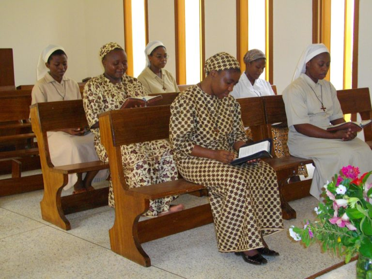

En la Vida Contemplativa todo está orientado a la oración . Nuestras obras no están fuera de la oración, se convierten en oración según nuestro modo interior y exterior de vivirlas. Nuestros corazones siguen ardiendo con el deseo de participar en la obra de la creación. La práctica más común y necesaria en la vida espiritual es procurar permanecer en la presencia de Dios, complacerse y acostumbrarse a vivir todo en su divina compañía, hablando humildemente y conversando amorosamente con Él en todo momento, sin regla o medida, y especialmente en tiempos de tentación, dolor, aridez, disgusto o incluso infidelidad o pecado.
Jesucristo en su Eucaristía es el centro de nuestra vida contemplativa. Bajo la acción del Espíritu Santo, nuestra misión en la Iglesia es continuar la oración ininterrumpida y unánime de la Virgen María y de los primeros discípulos, RV 1, con este lema: Asiduos en la enseñanza de los Apóstoles, en la comunión fraterna, la fracción del pan y las oraciones, Hechos 2:42.Estamos dedicados a la oración en el mundo por las obras de la Asunción, por los sacerdotes, por la Iglesia y por el mundo. Esta es nuestra oración apostólica.
Las Orantes de la Asunción comparten con las demás congregaciones de la Asunción la misma pasión por el Reino de Dios con este lema: Venga tu reino, Adeniat Regnum Tum .
Nuestra vida está arraigada en el Evangelio a través de la espiritualidad agustiniana. Es búsqueda de Dios y adoración en comunidad fraterna, en verdad y caridad, humildad y alegría, sencillez, trabajo y compartir. Regla de vida de los Orantes, nº 2